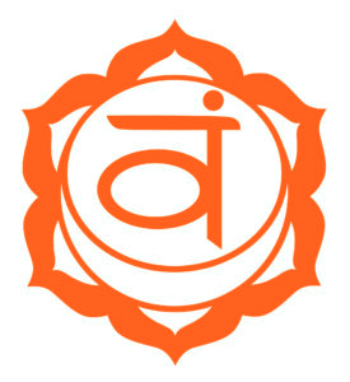
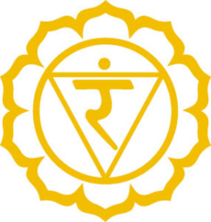
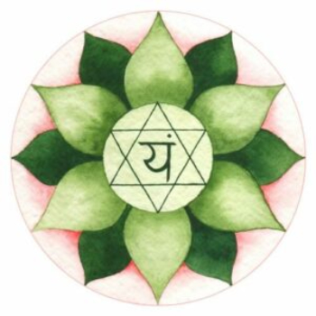

Chakras
CAMBIA TU VIDA Y TU MENTE CON LOS SIETE CUERPOS ENERGÉTICOS. APRENDE CÓMO ABRIR, EQUILIBRAR Y DESBLOQUEAR LOS 7 CHAKRAS, CUÁL ES SU SIGNIFICADO Y SUS BENEFICIOS
Si sabes cómo alinear y equilibrar los chakras, podrás hacer cambios potenciales en tu vida.
Cada zona del cuerpo transmite energía en una frecuencia determinada, así que lo que llamamos salud es el equilibrio armónico de todas estas frecuencias sintonizadas (chakra).
Estamos constantemente en comunicación con todo lo que nos rodea (campo energético universal). El campo energético humano contiene y refleja la energía de cada persona, es decir, todas las experiencias positivas y negativas, tanto externas como internas.
QUÉ SON LOS CHAKRAS: SIGNIFICADO
Los chakras son cuerpos energéticos, es decir, la energía que viaja por nuestro interior a través de diferentes centros o conductos de energía. Hay 7 chakras localizados en la columna vertebral, desde abajo hasta arriba.
CHAKRA: rueda
Cada chakra se diferencia por un color y un número de pétalos o vibraciones. Son herramientas que ayudan a trabajar, dentro y fuera del yoga, el conocimiento y manejo tanto de las emociones como de determinadas dolencias o aspectos vitales, en función de qué chakra se trabaje.
Pero ¿cómo pueden estar tan relacionados con todo? Por el fenómeno de la resonancia. Partimos de la base de que todo es energía. Así que, todos nosotros, como energía que somos, tenemos una determinada frecuencia, al igual que la luz, el sonido, el color…, los cuales son ondas y vibran también en determinadas frecuencias. Aunque no lo podamos ver, todas esas frecuencias tienen comunicación entre ellas.
Por ejemplo, seguro que muchas veces has escuchado (o tú mismo lo has dicho): me suena esta persona, o me suena este lugar. Ese “me suena” en realidad quiere decir que la frecuencia de esa energía o ese lugar resuena con la tuya.
Dicho de otra forma, imagina que cada frecuencia es un instrumento. En una orquesta, cada instrumento suena con otro concreto. Si estos están sintonizados y suenan (o resuenan) bien uno con otro, habrá una armonía. Y esto mismo pasa con tus energías y las que te rodean.
LOS SIETE CHAKRAS
PRIMER CHAKRA O MULADHARA CHAKRA

El chakra raíz es el chakra base, es decir, se encuentra en la zona baja de la columna. Gracias a él los huesos, uñas, dientes… se hacen fuertes.
- Loto de 4 pétalos.
- Chakra rojo.
- Elemento: tierra.
- Sentido: olfato.
- Alimentos: carne, alimentos rojos, legumbres.
- Mantra: LAM.
Se puede decir que el primer chakra es la base de los otros seis puntos energéticos del cuerpo y se encarga de aportarnos energía suficiente para vivir.
Cuando tenemos muladhara chakra está relacionado con el instinto de supervivencia por el cual nos mantenemos alerta.
La manifestación saludable del primer chakra produce:
- Seguridad física en la familia o el grupo.
- Capacidad para proveer las necesidades básicas de la vida.
- Sentirse a gusto en casa.
- Ley y orden social y familiar.
- Descanso adecuado y buena salud.
- Disfunciones: dolor crónico en la parte de la espalda, ciática, varices, tumor o cáncer rectal. Trastornos de alimentación; depresión.
Posturas recomendadas para activar este chakra: postura del árbol (vrksasana) o postura de la montaña (tadasana).
SEGUNDO CHAKRA O SWADISTHANA CHAKRA
Swadisthana chakra se encuentra unos 4 centímetros por debajo del ombligo, en la zona del sacro. A nivel físico, engloba el suelo pélvico, el aparato reproductor, los riñones y la vejiga; así como todos los flujos correspondientes.
- Color: loto de 6 pétalos naranja.
- Elemento: agua.
- Sentido: gusto.
- Alimentos: verduras y frutas naranjas; líquidos.
- Mantra: VAM.
El segundo chakra está asociado con la sexualidad, el deseo, el amor propio y la creatividad. Una persona que tiene equilibrado este chakra sentirá vitalidad, positivismo, satisfacción con la vida, compasión e intuición.
La manifestación saludable de swadisthana chakra, además, produce:
- Mejoras en las relaciones personales.
- Sensación de poder.
- Mayores niveles de creatividad.
- Mayor naturalidad hacia los demás.
- Ética y honor en las relaciones
Cuando el chakra sacro se encuentra desequilibrado (normalmente durante la adolescencia), puede generarse irritabilidad, falta de energía, inseguridad u obsesión con las relaciones sexuales. Para evitarlo o moderarlo hay que saber manejar correctamente estas energías.
Posturas recomendadas para activar este chakra: postura del cuervo (kakasana) o postura del triángulo extendido (utthita trikonasana).
TERCER CHAKRA O MANIPURA CHAKRA

El tercer chakra está a unos dos centímetros por encima del ombligo, en el plexo solar (a la mitad entre el ombligo y el diafragma). Se relaciona con el abdomen, intestino, sistema nervioso, etc.
Además, está vinculado con emociones como el ego o la autoestima.
- Color: loto de 10 pétalos amarillo.
- Elemento: fuego.
- Sentido: vista.
- Alimentos: cítricos, arroz, avena, frutas ácidas.
- Mantra: RAM.
La manifestación saludable de manipura chakra produce:
- Más confianza.
- Mejor concentración.
- Mayor autoestima.
- Conciencia universal hacia uno mismo y los que le rodean.
- Responsabilidad para tomar decisiones.
Cuando el tercer chakra está equilibrado, sientes energía, seguridad y mejor productividad. Nos hace ser generosos con nosotros mismos y los demás, lo cual provoca que nos sintamos satisfechos y felices.
Cuando no está equilibrado este chakra, pueden aparecer problemas digestivos. Y, a nivel mental, problemas psicológicos como depresión, ira o trastornos compulsivos obsesivos, debido a un exceso de crítica o prejuicios.
Principalmente se basa en tener suficiente voluntad para conseguir lo que quieres y saber disfrutar de lo que has conseguido.
Posturas recomendadas para activar este chakra: postura de la cobra (bhujangasana), postura de la pinza (paschimottanasana) o el arco (dhanurasana).
CUARTO CHAKRA CHAKRA DEL CORAZÓN O ANAHATA CHAKRA

El cuarto chakra o chakra del corazón, como bien indica su nombre, se encuentra en el pecho o zona del plexo solar (anahata significa corazón), detrás del estómago, más o menos a la altura de la cervical 4D. Está relacionada con el aparato circulatorio y las funciones inmunológicas.
Este chakra se relaciona con la glándula endocrina, encargada entre otras cosas del crecimiento y desarrollo, así como de inmunizarnos ante enfermedades.
A él se le asocian emociones como el amor, el perdón y la compasión.
- Color: loto de 12 pétalos verde.
- Elemento: aire.
- Sentido: tacto.
- Alimentos: verduras y hojas, frutas verdes y yogures.
- Mantra: YAM.
Es el lugar donde reside nuestro verdadero yo. Ese amor y perdón es lo que nos da el sentido de la responsabilidad. No obstante, el apego se alimenta del miedo, pero con el amor y la compasión todos los temores desaparecen. Eso no significa que el miedo se vaya para siempre, sino que a pesar de seguir formando parte de nuestra conciencia, no le hacemos caso.
La cualidad del chakra del corazón es el amor puro e incondicional. Normalmente, cuando se ama, se espera algo a cambio. Sin embargo, en el amor puro o incondicional, no hay condiciones para demostrar amor.
Cuando anahata chakra está equilibrado, sientes compasión, optimismo, energía y afecto por ti y por otras personas. Es una sensación curativa y transformadora.
Posibles disfunciones si el chakra no está abierto: problemas emocionales (ansiedad, mal humor, celos…) o problemas respiratorios (asma, alergias, cáncer de pulmón, neumonías, cáncer de mama…).
Posturas recomendadas para activar este chakra: cualquier postura de extensión (abrir el pecho) o la postura del pez (matsyasana).
QUINTO CHAKRA O VISHUDDHA CHAKRA
El quinto chakra, vishuddha o chakra de la garganta se sitúa más o menos donde la C4 (cervical), en la base de la garganta.
Los órganos y partes del cuerpo relacionados con vishuddha chakra son, además de la glándula tiroides, la garganta, el cuello, la boca, los dientes, la mandíbula, los oídos, el esófago y los pulmones.
Este chakra está relacionado con la inspiración, la comunicación y la fe, así como con la voluntad y la capacidad de expresarse. Representa el poder de comunicarse, más allá de las palabras.
- Color: loto de 16 pétalos celeste.
- Elemento: espacio.
- Sentido: oido.
- Alimentos: frutas, pero sobre todo uvas, hierbas, sopas frías y jugos (manzanilla).
- Mantra: HAM.
Vishudda significa purificar, por lo que este chakra nos guía y purifica en nuestro camino desde nuestro cuerpo físico hasta nuestro verdadero ser. Cuando está alineado, sentimos cómo crece nuestra creatividad y la comunicación constructiva.
Cuando este chakra está desequilibrado, nos sentimos tímidos, cansados, falta de movilidad y problemas inmunológicos (resfriado, laringitis…), así como problemas respiratorios, entre otros.
Posturas recomendadas para activar este chakra: postura dela vela (salamba sarvangasana) o la postura del arado (halasana).
SEXTO CHAKRA CHAKRA DEL TERCER OJO O AJNA CHAKRA
El sexto chakra o ajna chakra se encuentra en el entrecejo, de ahí lo de tercer ojo. Mientras que los dos ojos te dan una visión del mundo tal como es, el tercer ojo te da otra perspectiva diferente, más amplia y profunda, capaz de ver lo invisible o desconocido. Concretamente, este chakra sirve también como enfoque de la mirada o drishti durante la práctica, ya que nos ayuda a concentrarnos mejor en las asanas.
La activación del chakra del tercer ojo libera el karma acumulado de antecesores y aporta sentido de la intuición. Está relacionado con la sabiduría, el conocimiento y la comprensión. Equilibrado, aporta seguridad y autoestima, sin apego a lo material y sin miedo a la muerte: se integra nuestra personalidad.
Para saber qué rumbo tomar en nuestras vidas, este chakra nos ayuda a través de la intuición.
Cuando ajna chakra no está equilibrado, te sientes inseguro de tu valía y de tus logros, egoísta o incluso agresivo. Igualmente, puedes tener cefaleas, problemas de vista o cansancio visual.
- Color: loto de 2 pétalos añil, morado.
- Elemento: luz.
- Sentido: sexto sentido.
- Alimentos: ayuno.
- Mantra: OM.
Se puede decir que el par de pétalos representa las ventajas e inconvenientes que implica cada pensamiento. Controlar ajna chakra significa saber desenvolverse con intuición, sin dejarse llevar por esos pros y contras. Tú controlas tus pensamientos.
Equilibrado, este chakra nos enseña el significado real del perdón, desechando el odio o el rencor, ya que estos no nos dejan vivir en paz y en amor con nosotros mismos ni los demás.
Cuando el sexto chakra está desequilibrado, se pueden generar problemas psicológicos o neurológicos (ataques epilépticos, problemas de oído o visión, de aprendizaje…).
Posturas recomendadas para activar este chakra: postura sobre la cabeza (sirsasana).
SÉPTIMO CHAKRA O SAHASRARA CHAKRA
El séptimo chakra o coronario se ubica en la coronilla. La fontanela (zona blanda de la cabeza) es el lugar en el que conecta el sahasrara chakra, por lo que está relacionada con el sistema nervioso.
Se considera el centro de lo espiritual, de la energía y la iluminación. Se encarga de recibir la energía divina en forma de sabiduría y conciencia de lo divino o eterno: el alma. Se trata de la conciencia de uno mismo y del universo al mismo tiempo. Sahasrara chakra representa un estado de iluminación que en la historia del yoga se conoce como samadhi.
- Color: loto de mil pétalos blanco.
- Elemento: no existe otro plano.
- Sentido: no existe.
- Alimentos: ayuno, luz solar.
- Mantra: silencio o letra “M”.
Posturas recomendadas para activar este chakra: postura sobre la cabeza (sirsasana) o meditación.
En el canal de Lucía Liencres puedes encontrar este vídeo donde Alejandra, profesora de THECLASSyoga, habla sobre los chakras y las emociones.